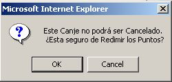

La primera opción se refiere a Alianzas, en donde el usuario
puede cambiar sus Puntos Disponibles por certificados de descuento
para viajes con American Express
Dentro de la sección de Alianzas, el usuario también puede cambiar sus Puntos Disponibles por certificados de viaje de American Express
Alianzas
AMERICAN EXPRESS
El usuario puede utilizar sus Puntos Disponibles para adquirir certificados de descuento para viajes con American Express. Es muy importante mencionar que la adquisición del certificado se debe hacer exclusivamente con Puntos, Telcel NO debe recibir dinero a cambio del certificado.
Después de que se ingresa al módulo de Redenciones sin renovación de addéndum y se selecciona la opción de Alianzas, el asesor debe seleccionar en la pantalla de Alianza Inicial , la Alianza "American Express" y oprimir el botón continuar.
Captura Datos de Alianza
En este momento el Sistema determina si hay datos dados de alta para la línea, si los hay, aparecerá la pantalla de Consulta de Promociones, en caso contrario aparecerá la pantalla de Captura.
En esta pantalla se tienen que capturar los nombres y apellidos tal y como aparecen en la credencial de elector, Los campos de Alianza, Teléfono y Cuenta no son editables.
NOTA: El nombre que se captura puede ser diferente al nombre bajo el que esta registrada la línea de Telcel.
Después de capturar los datos y oprimir el botón Agregar, se despliega un mensaje de "Actualización Exitosa" con la opción de hacer una Consulta de Promociones:
Consulta de Promociones
En esta pantalla se presentan los datos del cliente, información del cliente y una lista de promociones AMEX que el cliente puede adquirir haciendo uso de sus Puntos Disponibles.
En la sección de paquetes de viaje, la columna que dice Puntos a canjear es el número de Puntos que se redimirán si el cliente decide llevarse el certificado. La columna Valor que ampara el certificado, contiene el valor en pesos que ampara el certificado.
Los valores son mostrados de acuerdo a la cantidad de Puntos Disponibles que tiene la línea, por lo que si el cliente tiene pocos puntos Disponibles puede ser que no se muestren promociones.
Venta de Certificado
En la pantalla de consulta de Promociones se muestran para cada paquete el valor que ampara el certificado. Para hacer el canje de Puntos hacia AMEX, es necesario que el asesor seleccione una promoción, ingrese un comentario y oprima el botón canjear:
Después de oprimir el botón de Canjear el sistema despliega la pantalla, con el mensaje de que el movimiento fue exitoso:
En esta pantalla se puede dirigir al asesor a:
- Consultar al Alianza para corroborar la redención de puntos,
- Invocar la pantalla de Impresión de la Constancia de Canje para que el cliente firme de conformidad con el trámite
- Imprimir el Certificado AMEX
Al consultar la alianza para corroborar la redención, aparece una sección llamada "Cupones Anteriores" para aquellas líneas que tienen al menos un canje hacia AMEX. En el presente ejemplo, la línea tiene un cupón AMEX pendiente de liberar:

Otros estatus que puede tener el cupón son:
- Cupón liberado
- Canje cancelado
- Cupón caducado
Impresión del Certificado
Desde la pantalla de Movimiento exitoso (página 36) o desde la Consulta de Alianza, se puede mandar a impresión el certificado oprimiendo el botón Imprimir. A continuación, se debe seleccionar el certificado que se desea imprimir ya que la cuenta puede tener más de uno que aún no han sido liberados, ni cancelados, ni caducado. Se puede mandar a imprimir un certificado, cualquier número de veces, incluso varios días después de que el cliente haya adquirido el certificado, por ejemplo en causa de pérdida.
NOTA: En las regiones donde no hay CAC, se va a mandar por fax el certificado.
Después de seleccionar un certificado y oprimir el botón "Continuar" , el sistema despliega la pantalla para impresión de certificado:

NOTA: Para imprimir el certificado se debe hacer click en el área del certificado y seleccionar en el menú del navegador la opción Archivo / Imprimir (File / Print). El asesor debe verificar en la pestaña de "Opciones" que este seleccionada la opción "Imprimir solamente el marco seleccionado" (Only the selected frame):

Cancelación de Canje
Para hacer una cancelación de un canje, se debe tener perfil de Jefe. En la consulta de Promociones, se debe oprimir el botón de "Cancelar canje" y aparecerán los canjes que todavía pueden ser cancelados, un certificado puede ser cancelado siempre y cuando no tenga estatus de cancelado, caducado o liberado y si se adquirió hace menos de 30 días naturales.
Una vez seleccionado el canje, se debe introducir un comentario.
NOTA:Para cancelar un canje, el cliente debe regresar a Telcel el certificado, ya que en este certificado esta contenido el número de Folio que permite identificar el canje que hay que seleccionar de la lista.

Cuando se oprime el botón "Continuar" se despliega un mensaje de Cancelación exitosa, que ofrece nuevamente la opción de Consultar la Alianza.
Impresión de la Constancia de Canje
Para imprimir la constancia de canje, se puede acceder a la pantalla desde dos partes: Desde la pantalla de Canje Exitoso o desde el módulo de impresión seleccionando la Alianza "American Express":
Si existe más de un canje se mostrará una lista de redenciones para que se pueda elegir la que se quiere imprimir, después de seleccionar una opción, se despliega la constancia de canje:
NOTA:El cliente debe firmar una constancia de canje, antes de dejar el CAC ya que es el comprobante de redención de puntos.
Liberación de un Certificado
Esta acción esta limitada para los asesores de telefónico que se van a encargar de liberar los certificados. En la pantalla de Consulta de Promociones, se puede invocar la pantalla para liberación de canjes, en primer lugar se presentará una lista con los certificados pendientes de liberación.
La liberación de un certificado, se inicia con una consulta que AMEX hace vía telefónica para comprobar que Telcel efectivamente expidió un certificado y se redimieron los puntos. En esa consulta el asesor de AMEX debe proporcionarle al asesor de Telcel:
- Número telefónico del cliente o la cuenta
- Número de Folio del certificado
- Número de Puntos canjeados
- Fecha de expedición
- Valor del cupón
- Valor del viaje en pesos
- Número de acompañantes
Para validar el certificado, el asesor de Telcel tiene que comparar los datos proporcionados por AMEX (menos el valor del cupón, el valor del viaje en pesos y número de acompañantes) con los que aparecen en los certificados de la lista.
Si para un certificado de la lista, los datos coinciden (especialmente el número de Folio) entonces el asesor deberá ingresar el valor del viaje en pesos, el valor del cupón y el número de acompañantes, posteriormente se deberá oprimir el botón Continuar.
NOTA:Los valores de: Valor del viaje, valor del cupón y número de acompañantes que el asesor de Telcel deberá capturar, deben ser proporcionados por el asesor de AMEX.
Al oprimir el botón "Continuar" de la pantalla de verificación de datos, el estatus del certificado cambia a liberado y se guardan en la Base de Datos de Círculo Azul, el valor del viaje, el valor del cupón y el número de acompañantes tal como fueron capturados por el asesor.
Posteriormente aparece una pantalla con el Folio de liberación del Certificado, el cual utilizará AMEX para facturar a Telcel. El Folio de liberación es diferente al que se generó en el momento en que se vendió el certificado y que fue impreso en el mismo:
NOTA:Este número de Folio debe ser proporcionado por el asesor de Telcel al asesor de AMEX.
NOTA:Una vez que se libera un certificado, no podrá ser cancelada la redención de Puntos.
La segunda opción de Redención sin renovación de addéndum es canjear Puntos Disponibles por Equipos de Amigo Kit.
AMIGO KIT
Una vez seleccionado el modelo que el cliente desea, la consulta puede hacerse de 3 maneras:
- Consulta de Productos por Puntos:
- Se muestran rangos de promociones que el usuario puede elegir de acuerdo a la cantidad de Puntos Disponibles con que cuenta la Línea:
- Consulta de Puntos por Rango:
- Esta opción se utiliza cuando se quiere revisar el Valor del Amigo en Puntos sin importar la cantidad de Puntos Disponibles que tiene la línea, sin embargo, el sistema no permite redimir aquellas promociones cuyo valor no corresponde al que tiene la línea:
- Consulta de Productos por cantidad específica de Puntos:
- Cuando el usuario quiere utilizar la totalidad de sus Puntos para cambiarlos por en Amigo, se puede capturar la cantidad de Puntos que tiene el usuario y el sistema reflejará la diferencia que tiene que pagar en pesos:
VENTA DE TIEMPO AIRE
Los minutos de Tiempo Aire aplican para la línea que esta haciendo el canje de Puntos, como minutos extras a los contenidos en su plan.
En este tipo de redención, no se canjearán puntos para un Equipo, sino que se realizará un canje de puntos por un servicio (Tiempo Aire). Por tal motivo, las promociones se mostrarán de forma automática presionando el botón Busca Promociones.(es decir, no se elegirá Marca, Modelo , Adéndum, etc.).
Los minutos adicionales se ofrecen en 5 paquetes como se muestra a continuación:
Una vez seleccionado el producto de Tiempo Aire que el cliente desea, se deberán capturar los comentarios correspondientes y oprimir el botón de Redimir.
Debido a que el canje de Puntos Disponibles es por Tiempo Aire, el proceso de Redención internamente dará de alta el producto correspondiente en M2K (Plan de Descuento), y solamente si el movimiento es exitoso, se realizara el canje correspondiente de puntos.
Este tipo de canje no se podrá Cancelar, por tal motivo, aparecerá una ventana de confirmación de la redención de la siguiente forma:

Al realizar la redención de Tiempo Aire se realizarán las siguientes validaciones :
* Que la línea no tenga activa alguna promoción similar con AMEX, de ser así, se mostrará el siguiente mensaje de error :

* Si la línea cuenta con alguna de la promoción de doble de minutos(pej. MLD6X), de ser así, se mostrará la siguiente ventada de confirmación :
"Los minutos se aplicarán para el siguiente período ya que actualmente esta activa la promoción de minutos dobles".
Es importante considerar los siguientes puntos:
* Al cancelar la línea, el usuario perderá la promoción de minutos adicionales y no se le bonificarán.
* En caso de cambio de plan, los minutos adicionales se pierden automáticamente.
* Los minutos adicionales pueden ser utilizados únicamente en el periodo en que se aplican, en caso de que no se utilicen en ese periodo, se perderán.
ACTIVACIONES DE AMIGO
Los usuarios que realicen una renovación de contrato y adquieran un nuevo equipo por medio de sus Puntos, tendrán la opción de utilizar sus Puntos sobrantes (Disponibles) para activar el equipo anterior en sistema de prepago. Esta opción estará disponible únicamente en regiones 1 a 8.
Se podrán elegir la opción de activación en TDMA o GSM:
- TDMA = 5,000 Puntos Disponibles (Incluye únicamente el costo de la activación, por lo que el cliente deberá comprar una tarjeta del monto que él decida)
- GSM = 4,950 Puntos Disponibles (Incluye el costo de activación, la SIM Card y $300 de Tiempo Aire diferido de acuerdo a la tabla de precios y promociones vigentes)
Para poder consultar promociones de activaciones con puntos es necesario que el usuario de Círculo Azul seleccione en la pantalla inicial del módulo de Redención el tipo de redención "Activaciones de Amigo"
Después de oprimir el botón "Continuar" se despliega la pantalla que permite al usuario consultar promociones de activaciones con puntos
El usuario debe seleccionar la plataforma a la que pertenece el teléfono que va a ser activado en pre-pago (TDMA ó GSM) y el tipo de consulta (puntos, rangos o cantidad específica de puntos).
Una vez elegida la tecnología, se debe oprimir el botón de Busca Promociones para que el cliente elija alguna opción:
Al igual que en todas las redenciones, al elegir la promoción deseada, se debe capturar un comentario y oprimir el botón Redimir:
|